Activity: Applying sketch relationships (collinear, parallel, equal)
In this activity, learn to use more relationships in the profile/sketch environment.
This activity covers the collinear, parallel, and equal relationships.
In this activity, learn to use more relationships in the profile/sketch environment.
This activity covers the collinear, parallel and equal sketch relationships.
-
Open sketch_a1.par.
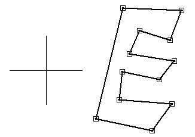
Apply relationships to control the E shape.
No horizontal/vertical relationships are used. This allows the sketch to rotate at any angle and maintain the E shape.
In PathFinder, right-click the sketch named Sketch A. On the shortcut menu, choose the Edit Profile command.
Define the shape by applying parallel relationships. The first element you select is made parallel to the second element selected. In the Face Relate group, choose the Parallel command .
Select the line segments as described below.
-
Click (3), then click (1).
-
Click (5), then click (1).
-
Click (7), then click (1).
-
Click (9), then click (1).
-
Click (11), then click (1).
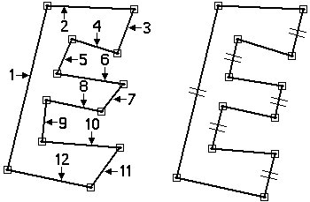
Continue to add parallel relationships to the remaining line segments.
-
Apply the parallel relationships shown:
-
Click (10), then click (12).
-
Click (8), then click (12).
-
Click (6), then click (12).
-
Click (4), then click (12).
-
Click (2), then click (12).
-
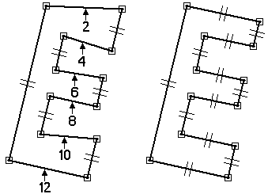
Apply collinear relationships to align line segments. The first line segment you select is made collinear to the second line segment selected.
Choose the Collinear command .
Select the line segments as shown.
-
Click (7), then click (11).
-
Click (3), then click (11).
-
Click (5), then click (9).
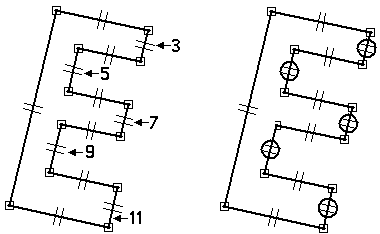
Apply equal relationships to control the thickness of the E shape.
Choose the Equal command .
The first line segment you select is made equal to the second line segment selected.
-
Click line segment (5), then click line segment (3).
-
Click line segment (7), then click line segment (3).
-
Click line segment (9), then click line segment (3).
-
Click line segment (11), then click line segment (3).
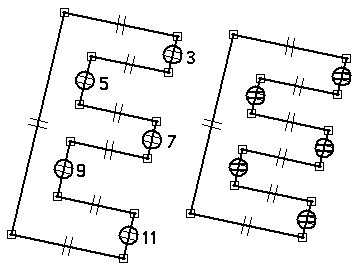
Add dimensional constraints to complete the E shape.
Choose the Smart Dimension command .
Dimension the line as shown. The value is not important at this point.
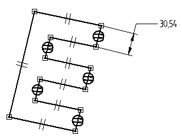
Choose the Distance Between command .
On the command bar, click the By 2 Points option.
Dimension the two line segments as shown. Click the lines (do not click the end points or midpoints).
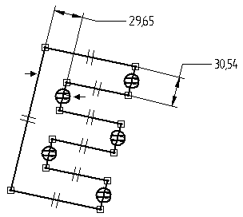
Choose the Smart Dimension command and dimension the line segment shown.
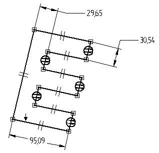
Align the midpoint of the left line segment to the center of the reference planes.
Choose the Horizontal/Vertical command .
Click the midpoint of the left line segment as shown.
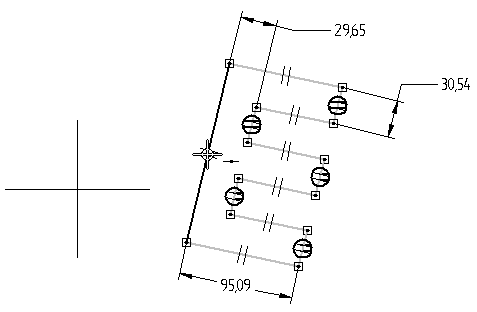
Click the midpoint of the reference plane edge as shown.
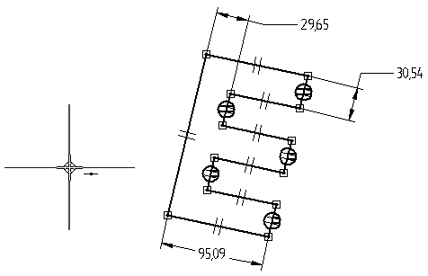
The midpoint of the left line segment aligns with center of the reference planes.
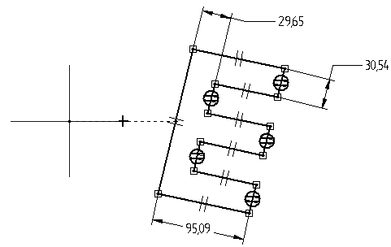
Edit the dimensions to complete the E shape.
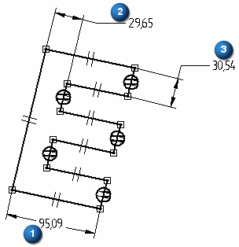
Edit the dimensions as shown.
-
Dimension (1) = 200
-
Dimension (2) = 50
-
Dimension (3) = Dimension (2)
Note:How to make two dimensions equal
-
Right-click the dimension (3).
-
On the shortcut menu, choose the Edit Formula command.
-
On the Edit Formula command bar, in the Formula field, type = and then click the dimension (2).
-
Click the Accept button.
-
Click the Select tool to end Edit Formula.
-
The result should be as shown.
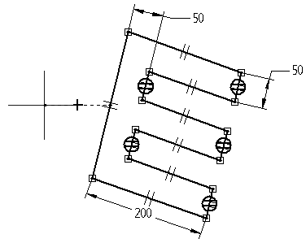
Add angular dimensions which controls the shape and orientation relative to the horizontal reference plane.
Choose the Angle Between command .
Place the dimension shown by clicking the two lines (do not select any keypoints).
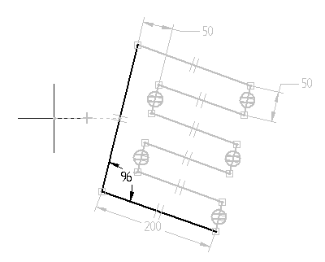
Place an angular dimension between the horizontal reference plane and the bottom line segment to control the E shape orientation. First right-click to restart the Angle Between command. Click the horizontal reference plane and the bottom line segment as shown (again do not click any keypoints).
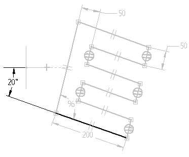
Edit the angular dimensions to observe the control over the shape and orientation.
Orientation angle = 45, shape angle = 90
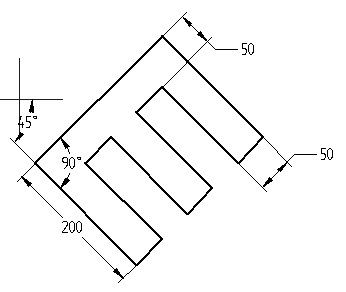
Orientation angle = 0, shape angle = 60
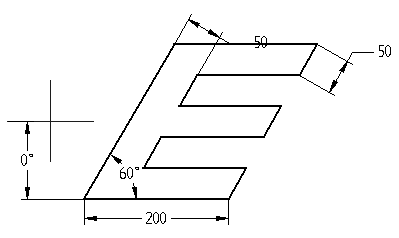
Click Close Sketch. On the command bar, click Finish. This completes the activity.
In this activity, you learned how to use dimensions and relationships to position a profile containing interior features. Relationships were used to position various features relative to each other. By varying the dimensions, you are able to control the size and position of the interior features and maintain design intent.
-
Click the Close button in the upper–right corner of this activity window.